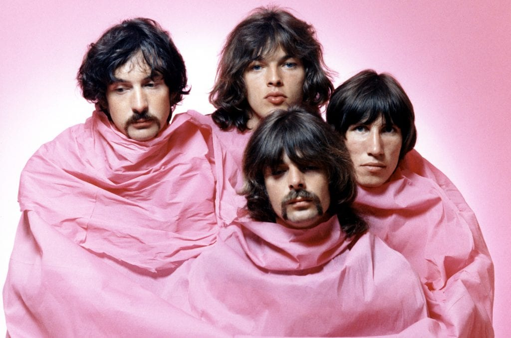

Criada na Inglaterra em 1965 por Syd Barrett (guitarra/vocal), Roger Waters (baixo), Nick Mason (bateria) e Richard Wright (teclados). Em 1968, Syd deixa pink floyd, e David Gilmour assume o seu lugar. Conhecida pela psicodelia e pela criação de álbuns conceituais profundos, como The Dark Side of the Moon e The Wall.
 voltar